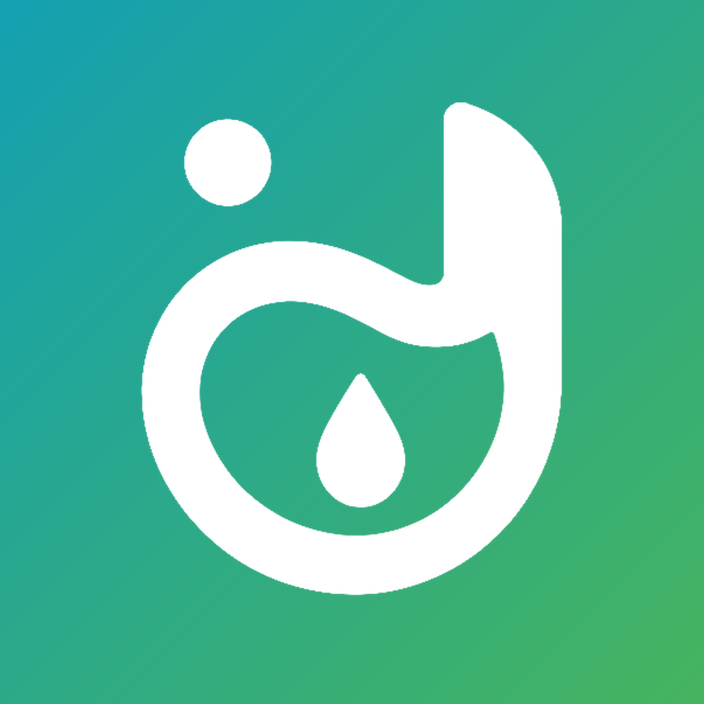

Last updated: August 5, 2026 · Berlaku sejak 5 Agustus 2026
Diabest Friend ("the App") is a personal food-diary, recipe, and health-tracking app for calorie counting and diabetes-friendly meal planning. This policy explains what happens to your data when you use it.
The App does not have a server, an account system, or any analytics/advertising SDK. Everything you enter — profile, meal diary, lab results, weight log, custom foods, and language preference — is stored only in local storage on your own device. Nothing is transmitted anywhere.
None, by us. We (the developer) never receive, see, or have access to any data you enter into the App. There is no backend server for this App to send data to.
This data stays on your device using standard local app storage. It is never uploaded, synced to a cloud, or shared with the developer or any third party.
The App uses none. No analytics, no crash reporting service, no ad network, no third-party food database API. All nutrition data is bundled inside the App itself.
The App lets you manually export a backup file (plain JSON) via your device's native share sheet, so you can save it to your own cloud storage, email, or files app before switching phones. This file is not encrypted — please store it somewhere reasonably private, since it may include health-related information you entered (like lab results). The developer never receives a copy of this file; export and import both happen entirely on your device.
Your data stays on your device for as long as the App is installed. You can delete all App data at any time via Settings → Reset All Data, or by uninstalling the App. Since nothing is stored on a server, there is nothing further for us to delete on our end.
The App does not knowingly collect any data from anyone, including children, because it does not collect data at all — everything is entered voluntarily by the user and stored locally. The App is not directed at children and is intended for general adult use in personal diet/health tracking.
The App provides general nutrition and health-tracking information to support everyday meal planning. It is not a medical device and does not provide medical advice, diagnosis, or treatment. Lab-result reference ranges shown in the App are general clinical reference ranges, not a personal diagnosis. Always consult a qualified doctor or dietitian about your health condition.
If this policy changes, the updated version will be published at this same URL with a new "Last updated" date.
Questions about this policy or the App: support@diabestfriend.com
Diabest Friend ("Aplikasi") adalah aplikasi catatan makan pribadi, resep, dan pemantauan kesehatan untuk menghitung kalori dan perencanaan makan yang ramah diabetes. Kebijakan ini menjelaskan apa yang terjadi pada data kamu saat menggunakan Aplikasi.
Aplikasi ini tidak punya server, sistem akun, atau SDK analitik/iklan apa pun. Semua yang kamu masukkan — profil, catatan makan, hasil lab, catatan berat badan, makanan custom, dan preferensi bahasa — hanya disimpan di penyimpanan lokal perangkatmu sendiri. Tidak ada yang dikirim ke mana pun.
Tidak ada, dari pihak kami. Kami (pengembang) tidak pernah menerima, melihat, atau memiliki akses ke data apa pun yang kamu masukkan ke Aplikasi. Tidak ada server backend untuk Aplikasi ini mengirim data ke mana pun.
Data ini tetap ada di perangkatmu menggunakan penyimpanan aplikasi lokal standar. Data ini tidak pernah diunggah, disinkronkan ke cloud, atau dibagikan ke pengembang maupun pihak ketiga mana pun.
Aplikasi ini tidak menggunakan layanan pihak ketiga apa pun. Tidak ada analitik, layanan pelaporan crash, jaringan iklan, atau API database makanan pihak ketiga. Semua data nutrisi sudah tertanam di dalam Aplikasi itu sendiri.
Aplikasi memungkinkan kamu mengekspor file backup (JSON biasa) secara manual lewat share sheet bawaan perangkat, supaya kamu bisa menyimpannya ke cloud storage, email, atau aplikasi file milikmu sendiri sebelum ganti HP. File ini tidak dienkripsi — simpan di tempat yang cukup privat, karena bisa berisi informasi terkait kesehatan yang kamu masukkan (seperti hasil lab). Pengembang tidak pernah menerima salinan file ini; ekspor dan impor sepenuhnya terjadi di perangkatmu.
Datamu tetap ada di perangkat selama Aplikasi terinstal. Kamu bisa menghapus semua data Aplikasi kapan saja lewat Pengaturan → Reset All Data, atau dengan uninstall Aplikasi. Karena tidak ada yang tersimpan di server, tidak ada lagi yang perlu kami hapus di pihak kami.
Aplikasi ini tidak dengan sengaja mengumpulkan data dari siapa pun, termasuk anak-anak, karena Aplikasi memang tidak mengumpulkan data sama sekali — semua dimasukkan secara sukarela oleh pengguna dan disimpan secara lokal. Aplikasi ini tidak ditujukan untuk anak-anak dan dimaksudkan untuk penggunaan umum orang dewasa dalam pemantauan diet/kesehatan pribadi.
Aplikasi ini menyediakan informasi nutrisi dan pemantauan kesehatan umum untuk mendukung perencanaan makan sehari-hari. Ini bukan alat medis dan tidak memberikan saran, diagnosis, atau perawatan medis. Rentang referensi hasil lab yang ditampilkan adalah rentang referensi klinis umum, bukan diagnosis pribadi. Selalu konsultasikan kondisi kesehatanmu ke dokter atau ahli gizi yang berkualifikasi.
Jika kebijakan ini berubah, versi terbaru akan dipublikasikan di URL yang sama dengan tanggal "Berlaku sejak" yang baru.
Pertanyaan seputar kebijakan ini atau Aplikasi: support@diabestfriend.com